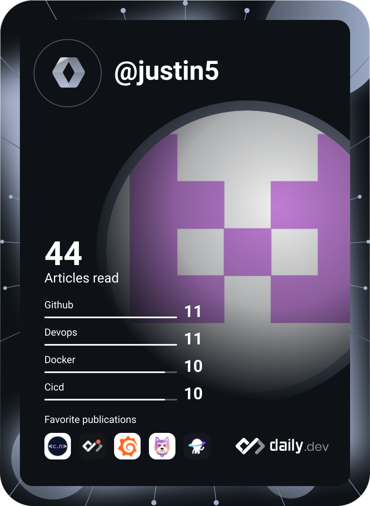

GitHub Stats

Focusing on Container and Kubernetes Infrastructure
apiVersion: v1
kind: Pod
metadata:
name: justin-profile
spec:
containers:
- name: sre-engineer
image: t985026/skills:latest
ports:
- containerPort: 80Passionate about building robust, scalable infrastructure using Kubernetes and modern Cloud technologies.
Streamlining CI/CD pipelines and automating workflows to increase developer velocity and system reliability.
Ensuring high availability and system resilience through proactive monitoring and SRE best practices.
